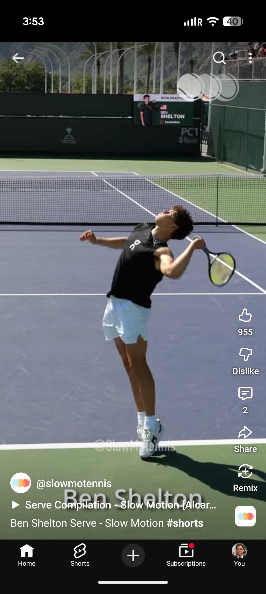
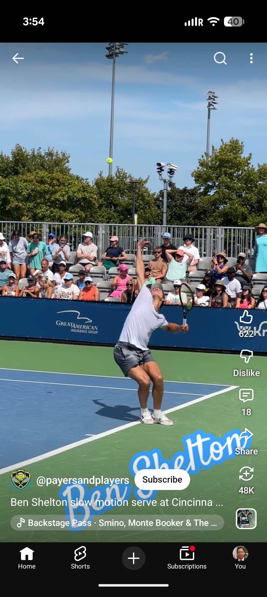
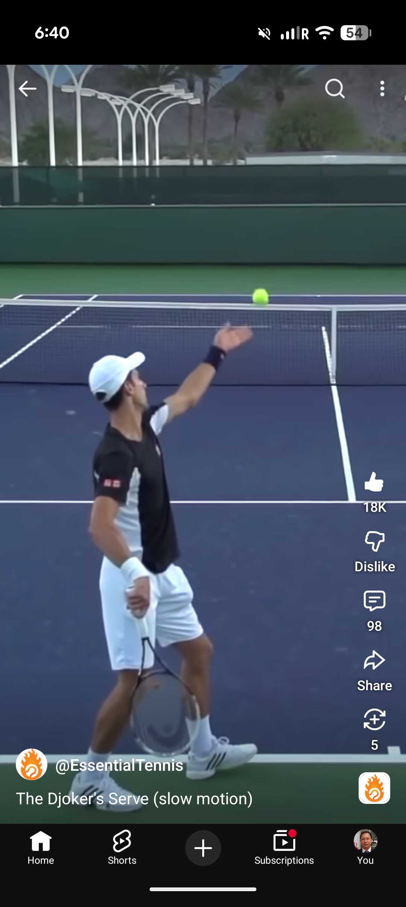
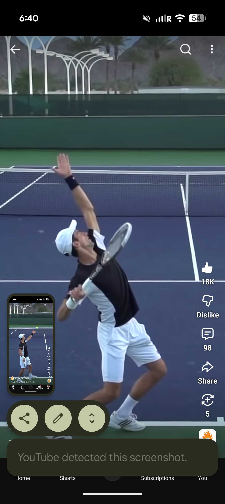
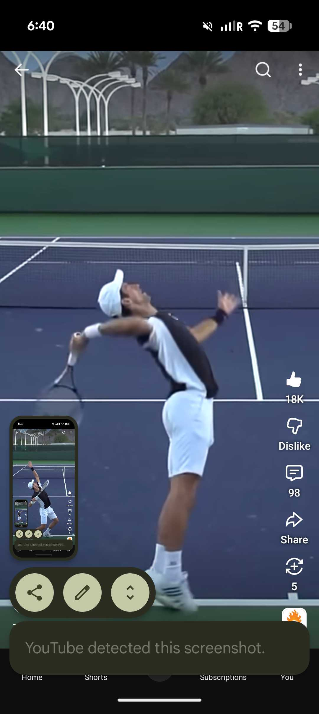
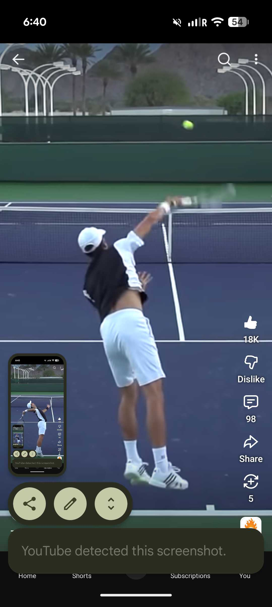
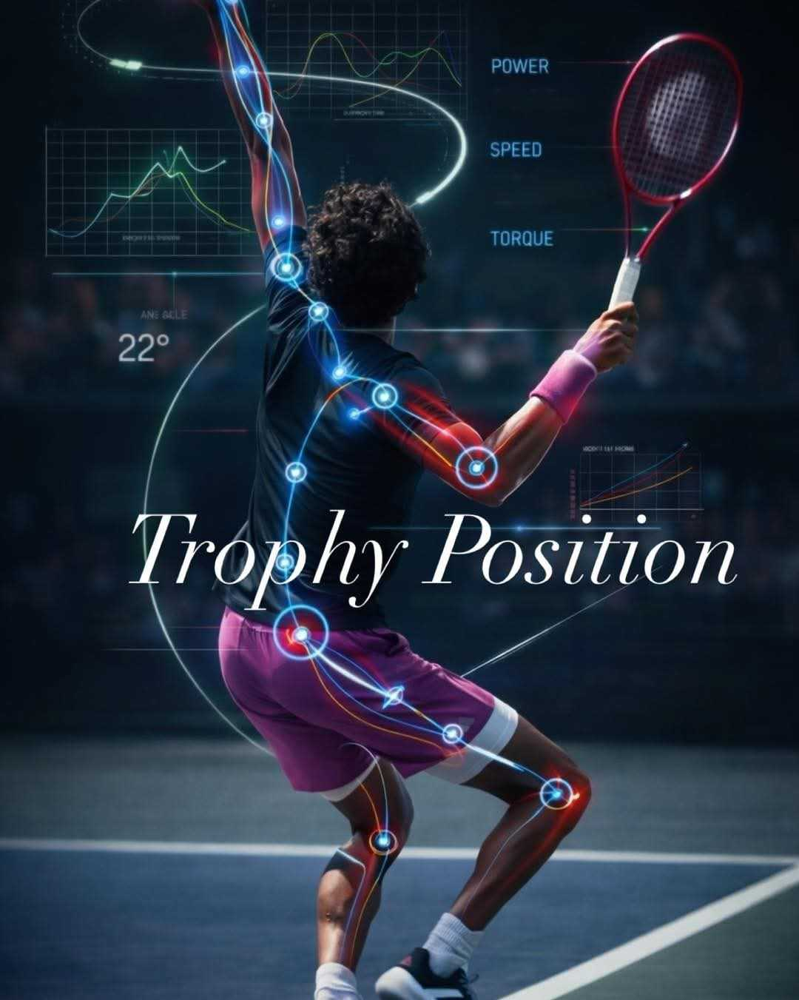

Phan_tich_Serve_Full_Shelton_Djokovic_Trophy¶
Tài liệu tổng hợp phân tích sâu về nguyên lý \"xoắn quanh ổ hông, không xoắn gối\" trong cú giao bóng hiện đại, dựa trên hình ảnh thực tế của Ben Shelton và Novak Djokovic.
1. Ben Shelton: Sức mạnh từ lò xo hông¶
Shelton là ví dụ điển hình cho cú serve bùng nổ dựa trên hip-shoulder separation lớn, trong khi gối chỉ làm bản lề.
1.1. Giai đoạn Load & Coil (Cincinnati)¶

-
• Gối gập sâu nhưng không đổ vào trong, hướng theo mũi chân
-
• Bàn chân song song baseline, áp lực ở cạnh trong
-
• Hông xoay 30-45 độ, vai vẫn đóng -- tạo hip-shoulder separation
Cảm giác đúng là \"coil around the hip socket\", không phải torque the knee.
1.2. Giai đoạn Uncoil (Indian Wells)¶

Hông trái đẩy lên trước, vai phải còn ở sau tạo hình chữ C. Năng lượng đi lên theo trục, không đi ngang qua gối.
2. Novak Djokovic: Hiệu suất và tuổi thọ¶
Djokovic không có cú serve 149mph như Shelton, nhưng là mô hình tối ưu về phân phối lực. Nghiên cứu 3D năm 2014 cho thấy anh tận dụng xoắn hông vừa phải và chuỗi whiplash hoàn hảo.
2.1. Toss & Lift¶

Bóng lên cao 3,45m, góc chiếu vai-hông đạt 38,65 độ ngay từ sớm. Lực đã bắt đầu tích ở hông, không ở gối.
2.2. Trophy Pose¶

Gối duỗi với tốc độ góc 210,6 độ/s, đẩy trọng tâm lên. Hai gối vẫn thẳng hàng với bàn chân.
2.3. Cuối Backswing -- Arched Body¶

Cơ thể tạo cung, vai phải mở 78,6 độ. Toàn bộ xoắn nằm ở cột sống ngực và hông, gối chỉ truyền lực.
2.4. Contact¶

Tốc độ: vai 3,42 m/s, khuỷu 3,76, cổ tay 6,24, đầu vợt 24,35 m/s. Lực tăng dần từ dưới lên, đúng nguyên lý spiral upward.
3. Trophy Position: Điểm khóa năng lượng¶

Góc 22 độ trong hình là góc nghiêng thân, tạo bởi hông đẩy về trước trong khi vai giữ lại. Các điểm sáng cho thấy chuỗi lực: xanh là truyền động (mắt cá, gối, cột sống), đỏ là tích năng lượng (hông, khuỷu).
-
Trophy đúng:
-
Hông thấp hơn vai, mông đẩy ra sau
-
Gối tracking theo mũi chân, không valgus
-
Căng ở oblique và hông trước, không đau gối
So sánh nhanh¶
Yếu tố Shelton Djokovic
Gập gối tối đa >130 độ, bật nổ 110,3 độ, vừa phải
Separation Rất lớn 38,65 độ
Tốc độ gối duỗi Cao 210,6 độ/s
Rủi ro Vai quá tải nếu hụt Thấp, bền vững chân
Kết luận chung¶
Cả Shelton và Djokovic đều tuân thủ nguyên lý cốt lõi: xoắn quanh ổ hông, giữ gối như bản lề sạch. Shelton dùng biên độ lớn để tạo tốc độ tối đa, Djokovic dùng biên độ tối ưu để tạo sự ổn định. Trophy Position với góc nghiêng khoảng 22 độ là điểm khóa mà ở đó năng lượng đàn hồi được lưu trữ ở hông và thân, không phải ở gối.
Phụ lục: Knee Pain Checklist dành cho Amateur Server¶
90% người chơi phong trào đau gối khi serve không phải vì lực lớn, mà vì sai lệch trục lặp lại. Dưới đây là 5 cơ chế phổ biến nhất và cách tự kiểm tra.
Vì sao lực nhỏ vẫn gây đau?¶
Đau gối trong serve không đến từ tải trọng lớn một lần, mà từ sai lệch trục lặp lại. Mỗi cú serve sai cơ chế tạo 2--3 lần lực cắt (shear) lên sụn chêm. Nhân với 150 cú mỗi buổi, 3 buổi mỗi tuần --- bạn có chấn thương quá tải dù chưa bao giờ serve quá 130 km/h. Amateur đau gối không phải vì serve mạnh, mà vì dùng gối để làm việc của hông.
5 Cơ chế chính gây knee pain¶
Cơ chế Nguyên nhân Hậu quả lên gối
1. Xoắn Hông cứng → xoay bàn chân ra Shear lên ACL và sụn chêm sai khớp ngoài để tạo coil → ống chân trong vặn vào trong
2. Valgus Đứng platform sai, gối chụm MCL bị kéo căng, sụn chêm bị collapse vào nhau khi hạ trọng tâm ép -- tương đương chạy 5km về áp lực
3. Thiếu Gập gối sâu (130°+) nhưng Áp lực lên gân bánh chè → hip hinge hông không đẩy ra sau, gối patellar tendinopathy vượt mũi chân
4. Landing Tiếp đất bằng gót, gối khóa Ground reaction force dội cứng thẳng sau khi nhảy thẳng lên khớp, dù chỉ nhảy 10cm
5. Glute Cơ mông không stabilize được Gối phải "gồng" thay hông mỗi yếu femur → cơ tứ đầu gối cú serve takeover
Self-check: Kiểm tra tại sân (1 phút)¶
Test 1 -- Video ngang Trophy: Vẽ đường từ hông xuống giữa gối và giữa mắt cá. Nếu 3 điểm không thẳng hàng → đang vặn gối.
Test 2 -- Bài tường: Đứng cách tường 1 bàn chân, mông chạm tường, vào tư thế Trophy. Nếu gối chạm tường trước mông → đang "ngồi bằng gối" thay vì hip hinge.
Test 3 -- Landing check: Serve nhẹ, quan sát tiếp đất. Nếu nghe tiếng "bịch" mạnh hoặc cảm thấy lực dội ngược lên gối → landing sai.
Fix theo thứ tự ưu tiên¶
Bước Drill Mục tiêu Vấn đề giải quyết
1 90/90 hip stretch 2 Mở hip mobility trước Xoắn sai khớp phút/bên khi tập
2 Romanian deadlift, hip Kích hoạt glute + Glute yếu, thiếu hinge drill hamstring hip hinge
3 Wall squat với Tập tracking gối theo Valgus collapse
resistance band quanh mũi chân
gối
4 Serve không nhảy, tiếp Tập landing mechanics Landing cứng
đất bằng mũi chân, gối
hơi gập
5 Shadow serve slow-mo Verify Trophy position Tất cả
trước gương, giảm độ và knee alignment
sâu gối về 100--110°
Nguyên tắc cốt lõi cần nhớ¶
• Gối = bản lề truyền lực. Hông = động cơ xoay.
• Compression tốt (lực theo trục, alignment sạch) --- gối chịu được. Torsion dưới compression (xoắn khi đang nén) --- gối phải trả giá.
• "Up first, rotate second": bật lên giải phóng compression, rồi mới uncoil. Đây là cơ chế bảo vệ tự nhiên của serve hiện đại.
• Khi kinetic chain đúng, đầu gối trở nên "vô hình" --- bạn không còn cảm thấy nó nữa. Đó là dấu hiệu tốt nhất.